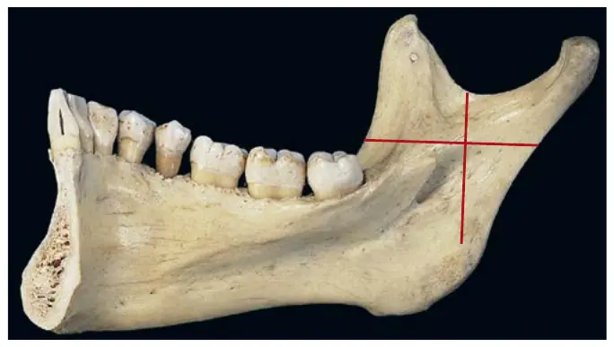
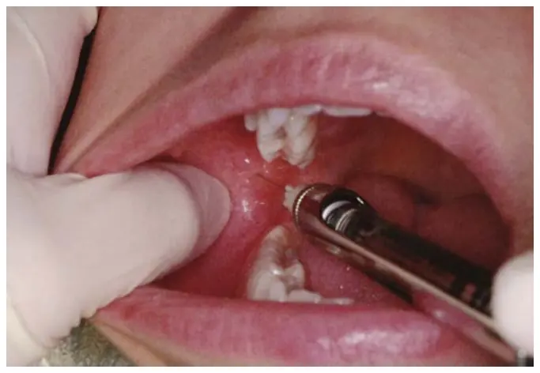

نسخه استخراجشده؛ ترجمه یا تأیید علمی انجام نشده است. وضعیت: captured
قدم 1 · theory
سوزن، وضعیت و نقطهی ورود
بیمار ۴۵ سالهای برای درمان ریشهی مولر اول پایین سمت چپ روی یونیت است و تو راستدستی. کجا مینشینی، کدام سوزن را برمیداری و سوزن را دقیقاً کجا وارد میکنی؟

نقطهی ورود محل برخورد خط افقی ارتفاع تزریق با خط عمودی سه چهارم فاصلهی ناچ کورونوئید تا رافه است. (Malamed. Handbook of Local Anesthesia, 7th ed. — Fig. 14.7)
سوزن و وضعیت
سوزن بلند (حدود ۳۲ میلیمتر)؛ گیج ۲۵ ارجح است و گیج ۲۷ بلند هم قابل قبول.
بیمار خوابیده به پشت، یا اگر لازم است نیمهخوابیده؛ دهان کاملاً باز.
راستدست برای IANB سمت راست: ساعت ۸، رو به بیمار.
راستدست برای IANB سمت چپ: ساعت ۱۰، همجهت با بیمار.
پیدا کردن نقطهی ورود
محل را با گاز خشک کن و بیحسی سطحی را ۱ تا ۲ دقیقه بگذار.
انگشت اشاره یا شست دست چپ را در ناچ کورونوئید بگذار و بافت را به سمت خارج بکش تا کشیده شود.
ارتفاع: خطی فرضی از نوک انگشت تا عمیقترین نقطهی پتریگومندیبولار رافه، موازی سطح اکلوزال؛ معمولاً ۶ تا ۱۰ میلیمتر بالاتر از آن.
نقطهی ورود روی همین خط است، در سه چهارم فاصله از ناچ کورونوئید تا رافه.
بدنهی سرنگ را روی گوشهی دهان طرف مقابل بگذار، معمولاً روی پرمولرها.
جهت بول در IANB اهمیت زیادی ندارد، چون سوزن تقریباً عمود به عصب میرسد.
قدم 2 · theory
عمق، برخورد با استخوان و تزریق
سوزن را آرام تا استخوان جلو ببر. در بزرگسال میانگین عمق تا استخوان ۲۰ تا ۲۵ میلیمتر است، یعنی دو سوم تا سه چهارم سوزن بلند. نوک سوزن حالا کمی بالاتر از سوراخ مندیبولار است.

عمق نفوذ تا استخوان ۲۰ تا ۲۵ میلیمتر است، یعنی دو سوم تا سه چهارم سوزن بلند. (Malamed. Handbook of Local Anesthesia, 7th ed. — Fig. 14.8)
پس از برخورد با استخوان، سوزن را حدود ۱ میلیمتر عقب بکش تا دارو زیر پریوست نرود.
در دو صفحه آسپیره کن.
اگر منفی بود، ۱٫۵ میلیلیتر را آرام و در دستکم ۶۰ ثانیه تزریق کن و وسط کار دوباره آسپیره کن.
سرنگ را آرام بیرون بکش؛ وقتی نیمی از سوزن در بافت مانده، دوباره آسپیره کن و اگر منفی بود، حدود ۰٫۲ میلیلیتر برای عصب لینگوال بریز.
پس از حدود ۲۰ ثانیه بیمار را بنشان. علائم بافت نرم معمولاً ۳ تا ۵ دقیقه بعد ظاهر میشوند؛ پیش از شروع کار پالپ را جداگانه بسنج.
اصلاح مسیر
استخوان زود لمس شد (کمتر از نیمی از سوزن بلند): نوک سوزن زیادی جلو (خارج) روی راموس است، جایی که استخوان ضخیمتر و بافت نرم حدود ۱۰ میلیمتر است. کمی عقب بکش، بدنه را روی کانین یا لترال طرف مقابل ببر و دوباره جلو برو.
استخوان لمس نشد: نوک سوزن زیادی عقب (داخل) است. عقب بکش تا حدود یک چهارم سوزن در بافت بماند، بدنه را روی مولرها ببر و دوباره تا استخوان پیش برو.
تا استخوان لمس نشده، دارو نریز.
قدم 3 · question
در IANB، سوزن بلند گیج ۲۷ قابل قبول است، ولی گیج ۲۵ بلند ارجح است.
۰۱
صحیح
۰۲
غلط
قدم 4 · question
دانشجوی راستدستی برای IANB سمت راست در ساعت ۱۰ نشسته و محل تزریق را خوب نمیبیند. اصلاح درست کدام است؟
۰۱
به ساعت ۸ برود و رو به بیمار بنشیند
۰۲
به ساعت ۸ برود ولی همجهت با بیمار بنشیند
۰۳
در ساعت ۱۰ بماند و سر بیمار را به سمت خودش بچرخاند
۰۴
به ساعت ۱۲ برود و از پشت سر بیمار تزریق کند
قدم 5 · question
خط فرضی ارتفاع تزریق در IANB از ناچ کورونوئید تا عمیقترین نقطهی پتریگومندیبولار رافه کشیده میشود و موازی سطح اکلوزال است.
۰۱
صحیح
۰۲
غلط
قدم 6 · question
نقطهی ورود سوزن روی خط میان ناچ کورونوئید و پتریگومندیبولار رافه کجاست؟
۰۱
درست در نیمهی راه ناچ کورونوئید و عمیقترین نقطهی رافه
۰۲
سه چهارم فاصله، از ناچ کورونوئید به سمت رافه
۰۳
در یک چهارم فاصله، نزدیک ناچ کورونوئید و لبهی قدامی راموس
۰۴
روی خود رافه، در عمیقترین نقطهی آن
قدم 7 · question
در IANB مرد ۵۰ سالهای، سوزن در عمق ۲۲ میلیمتری به استخوان خورده است. گام بعدی کدام است؟
۰۱
حدود ۵ میلیمتر عقب بکش، یک بار آسپیره کن و ۰٫۶ میلیلیتر را در حدود ۳۰ ثانیه بریز
۰۲
همانجا روی استخوان بمان، یک بار آسپیره کن و کل کارپول را سریع و در حدود ۲۰ ثانیه بریز تا بیمار کمتر اذیت شود
۰۳
حدود ۱ میلیمتر عقب بکش، در دو صفحه آسپیره کن و ۱٫۵ میلیلیتر را در دستکم ۶۰ ثانیه بریز
۰۴
حدود ۱ میلیمتر عقب بکش و بیآسپیراسیون، چون عمق درست است، ۱٫۵ میلیلیتر را بریز